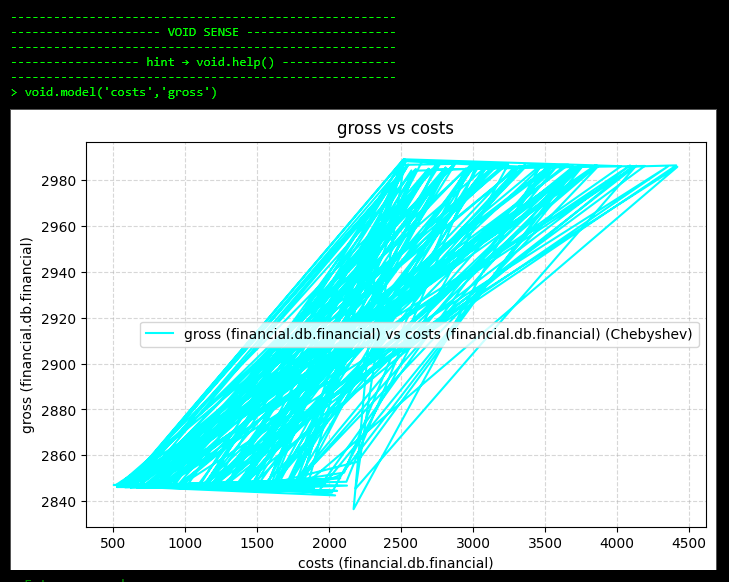

Current Status
11/18 AI agent infra scaffolding in AWS
- Lambda
- API gateway
- DynamoDB
- Secrets Manager
- VPC
11/17 Rebrand for MVP
- "Hermios: They'll get the message.
- https://derekwingard.wixsite.com/hermios3
11/16 Pre-Launch prep
- DB and api now live on railway and accessable via my android dev emulator
- Setting amounts earned for each influencer is now a backend process
- Pricing db can be used to set inflencer's amount upon profile creation
- More sophistication can be introduced modularly as it is needed
- Established a "manual CI" process for backend updates through gitlab and dockerhub
- Explore minimally dilutive options for a $100k investment to both allow Paul and I to commit full time for a year
MVP build recap 10/12-11/11
- Full stack app developed from ground up
- Analytics integrated into DB
- Live Analytics interface
- CLI for DB and DB Admin interaction
- Guiding wireframes
- Initial pitch deck
- React Native + Expo Front end
- Express endpoints
- PostgreSQL backend
- Firebase for authentication and temporary content storage
- Stripe for payments, +Connect withdrawals
-
Spin up free oracle instance to host the API and backend container when the required instance is available
11/11 MVP final features
11/10 Content Approval Pipline


11/8 Part 2: analytics backend updates
Platform Analytics
| Field | Type | Description |
|---|---|---|
| date | date (PK) | Analytics date |
| total_users | int | Total users in users table |
| total_artists | int | Total users with user_type='artist' |
| total_influencers | int | Total users with user_type='influencer' |
| active_users_daily | int | Users active in last 24 hours |
| jobs_created | int | Total jobs created |
| jobs_closed | int | Total jobs with closed_at NOT NULL |
| influencers_paid | int | Total influencer_payouts |
| full_job_rate | numeric(5,4) | Fraction of closed jobs where claim_count ≥ max_slots |
| current_open_jobs | int | Total jobs with closed_at IS NULL |
Financial Analytics
| Field | Type | Description |
|---|---|---|
| date | date (PK) | Analytics date |
| total_payouts | numeric | Sum of influencer_payouts.amount |
| payouts_count | int | Total influencer_payouts entries |
| total_refunds | numeric | Sum of unfilled_refunds.refunded |
| refunds_count | int | Total unfilled_refunds entries |
| total_paid_for_campaigns | numeric | Sum of all campaign budgets |
| net_revenue | numeric | Total_paid_for_campaigns - total_refunds - total_payouts |
| largest_single_payout | numeric | Largest influencer_payouts.amount |
| largest_single_refund | numeric | Largest unfilled_refunds.refunded |
11/8 Backend testing, management, and front end optimization


- Job closed (closed_at set)
- trg_create_unfilled_refund → unfilled_refunds
- log_refund_to_escrow_events → escrow_events ('refund')
- jobs_closed_at_logging → joblogs
- trg_prevent_updates_after_closed → system_logs
- trg_create_unfilled_refund → unfilled_refunds
- influencer_jobs.closed_at set
- trg_influencer_payout → influencer_payouts
- trg_log_unapproved_closure → influencer_logs
- unfilled_refunds.issued_at set
- log_refund_to_escrow_events → escrow_events
- prevent_modifications_after_refund_issued → system_logs
- users.wallet update attempted <0
- prevent_negative_wallet() → system_logs
- TODO: Set up triggers to fill the most immediately useful fields
- TODO: Set the analytics intergace to work from the analytics db, clone it, separate the two, and set up periodic filling triggers
11/7 Backend update to address unfilled campaign refunds
Artist ---> Job
\
Influencer ---> influencer_jobs (claim)
\
trg_create_escrow_on_claim
\
escrow_transactions
|
| escrow_claim_trigger
v
escrow_events ('claimed')
Escrow status updated ('released')
|
v
escrow_released_trigger
|
+--> escrow_events ('released')
+--> wallet update for influencer
+--> escrow_events ('influencer_paid')
Job closed (closed_at set)
|
+--> trg_create_unfilled_refund -> unfilled_refunds
|
+--> log_refund_to_escrow_events -> escrow_events ('refund')
+--> jobs_closed_at_logging -> joblogs
+--> trg_prevent_updates_after_closed -> system_logs
unfilled_refunds.issued_at set
|
+--> log_refund_to_escrow_events -> escrow_events
+--> prevent_modifications_after_refund_issued -> system_logs
- TODO: Streamline influencer to Stripe Connect onboarding for payout
- TODO: Implement claim based refund command for worker to call
- TODO: Implement refund off worker command
11/6 Full stack updates for MVP user experience
- Implimented "content complete : content approved : job closed" functionality for artists and influencers
- Artists can close a job manually
- Complete transactional logging system to handle the multi step transactions
- Added system logs and job logging dbs to track internal database problems and closed jobs (unhappy customers)
- Jobs now have an end date where they will be auto closed and logged if "incomplete"
- Creating job is now streamlined for MVP: select influencer count and genre, price calculated
11/5 Stripe Integration
- Added Stripe payment setup at sign up using stripe SDK cardfields
- Added Stripe update payment method in profile section
- Added Stripe Connect link to onboard users for withdrawal to bank account
-

- TODO: Set up "mark as complete" feature for influencers
- TODO: Set up "content approved" feature for artists
- TODO: Set up Terms of Service (TOS) Agreement users must sign after signup
- TODO: Discuss with my friend (a lawyer) to go over TOS details
11/4 Part 2: Centralized StyleSheet and set basic theme


11/4 Backend Triggers for logging events and transations
- Action vs DB event
- Artist --> | Creates campaign | --> Job[Jobs Table]
- Influencer --> | Claims job | --> Influencer_Job[influencer_jobs Table]
- Influencer_Job --> | Trigger trg_create_escrow_on_claim | --> Escrow[Escrow Transactions]
- Escrow --> | Trigger on INSERT | --> Event1[Escrow Events: "claimed"]
- Escrow --> | Trigger on status update | --> Event2[Escrow Events: "released"]
- Escrow --> | Trigger on release/payment | --> Event3[Escrow Events: "Influencer_paid"]
- Process
- Artist → Job
- Influencer → influencer_jobs (claim)
- trg_create_escrow_on_claim
- escrow_transactions
- trg_log_escrow_claim
- escrow_events ('claimed')
- trg_log_escrow_claim
- escrow_transactions
- trg_create_escrow_on_claim
- Escrow status updated ('released')
- trg_log_escrow_release
- escrow_events ('released')
- !!! TODO : update influencer wallet !!!
- escrow_events ('influencer_paid')
- trg_log_escrow_release
- Influencer → influencer_jobs (claim)
11/3 Backend rebuild to simplify
- Sign up now requires full profile + payment method
- Rebuilt user db and api to more easily manage: intake, list job, claim job
- De-spaghetti-ed the firebase to local DB handoff
- Split user experience between artist/influencer
- TODO: Setup Postgres auto triggers for financial logging db
- Streamlined Sign Up + Onboarding
10/30 Streaming lining for MVP build
- Whole system depends on the local Postgres container with firebase auth
10/29 Complete Analytics database and Interaction CLI
- Container now safely spins up with an exposed ssh server and Postgres db
- Depending on where this gets ultimately stored, this could make it super easy to access for quick checks
- Built a lightweight CLI interface to interacting with a remote database at Manager CLI Repository
- Allows users to check if db is active, the admins, and a basic info printout
- Script separates superusers from users so it can be spread to more people later on
- This lightweight CLI could allow us to have a reallllly cheap server to manage in hosue data where all we care about is serverside security
- TODO: Integrate whatever db co-founder builds for app backend
- TODO: Build private distribution curl link with user/superuser discression
- Brought in the demo AI recommendation system (mostly a smart filter atm) to the analytics repo and the main app repo
10/27 - Started in house analytics db and dev scripts
- Dashboard README.md
- Containerized a PostgreSQL db with suit of control scripts
- Some custom micro-clients and micro-apis started
- Kind of broke plotting but I think it's just an annoying HTML issue...
- Front end container is ready
- Back end container is ready for SSH tunnel for remote demo live analytics with async queries
10/27 - Basic in house analytics interface built
- Live Analytics interface updated, includes toggle-able series and runway calculator
- Linked the Analytics class object to call methods from interactive terminal
- Analytics class new features:
- Represents datasets on Chebyshev basis over [-1,1], rescaled to original
- printDB shows all columns
- void.model plots any dataset against any other from the DB
- modelDeriv plots the derivative, can be taken recursively (tested on cubic function)
Random Data

10/24 - Front end updates and stripe integration
- Added live analytics
- Added messaging
- Integrated Stripe into the profile
10/22 - Initial progress dump
- React Native app scaffolding with Social API endpoints (no key linkings yet) → TODO: centralize storage in MongoDB
- Initial custom live analytics dashboard with interactive console
- Main project hosted in GitLab for sophisticated CI/CD tools
- Firebase authentication with MongoDB setup ready to host on Render.com
- Wireframe flowcharts
The Analytics Dashboard presents a simple live plot of data stored in a SQL database:
https://github.com/DOWingard/Analytics-Dashboard

The Pitch Deck:

We have a wireframe flowchart.